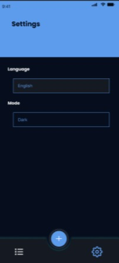

About the Project
A complete task management app built with Flutter to help users organize their daily workflow. The app features a clean, intuitive interface with a full authentication system so each user has their own private task list synced with Firebase.
The app supports both English and Arabic with full RTL layout handling, making it accessible to a wide range of users. Dark and light mode settings are persisted locally so the user's preference is always remembered.
Built using clean architecture principles with Provider state management, separating UI from business logic and keeping the codebase modular and scalable.
Full Firebase Auth flow with email verification, registration, login, and onboarding screens.
Complete English and Arabic support using Flutter's intl package with automatic RTL layout switching.
Clean architecture with Provider for state management and Shared Preferences for persistent local settings.
App Screenshots
